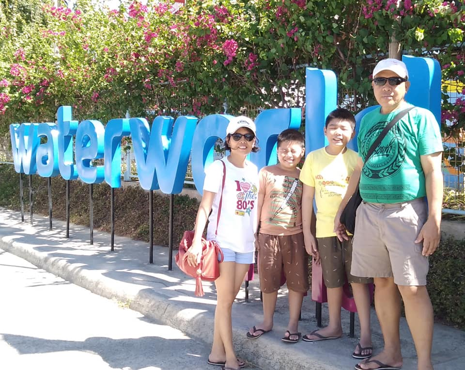
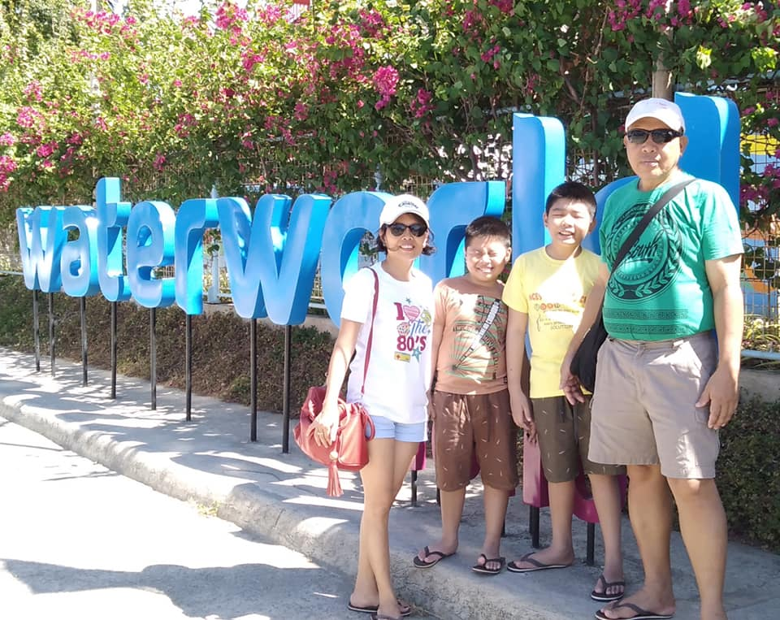

Andre is very happy and grateful to have such a caring and supportive
family. He is the big brother of the house but his little brother
is much more responsible and obedient than Andre 😅. Andre's Mother
is both caring and loving but this doesnt mean you should test her patience
🥲🥲. The father on the other hand is very smart and strong, he is Andre's
idol and also his teacher. Lastly, the live-in-cousin, she is the righthand
woman to my mother in house hold chores, she can be inefficient and lazy sometimes
but she can be reliable.
Andre and his family is very chaotic sometimes, they can get into fights but
their connection is strong. The family will support each other unconditionally and
Andre doesn't want it any other way. 🥰🥰
About Andre's Family:
| Andre's Family | |
|---|---|
| Myself | Andre Kyn S. Naciongayo |
| Brother | Albert John S. Naciongayo |
| Father | Ricky Andresito S. Naciongayo |
| Mother | Florame S. Naciongayo |
| Live-in Cousin | Ana Mae S. Egaran |
 
